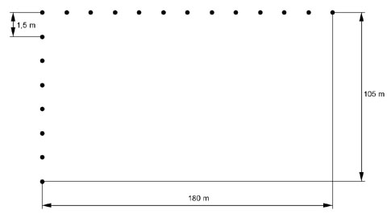

Flächenberechnungen Aufgabe 37 Ein Gärtner soll rund um einen Platz, der 180 m lang und 105 m breit ist, Bäume im Abstand von 15 m anpflanzen. Wie viele Bäume braucht er?  Gezeichnet im Maßstab 1 : 2 180 m Auf der Länge sind es -------- = 12 Abstände 15 m Anzahl der Bäume = Anzahl der Abstände + 1 = 13 Gesamtanzahl auf den beiden Längsseiten 2 * 13 Bäume = 26 Bäume 105 m Auf der Breite sind es -------- = 7 Abstände 15 m Anzahl der Bäume = Anzahl der Abstände - 1 = 6 Bäume Gesamtanzahl auf den beiden Breitseiten = 2 * 6 Bäume = 12 Bäume Bäume insgesamt = 26 Bäume + 12 Bäume = 38 Bäume